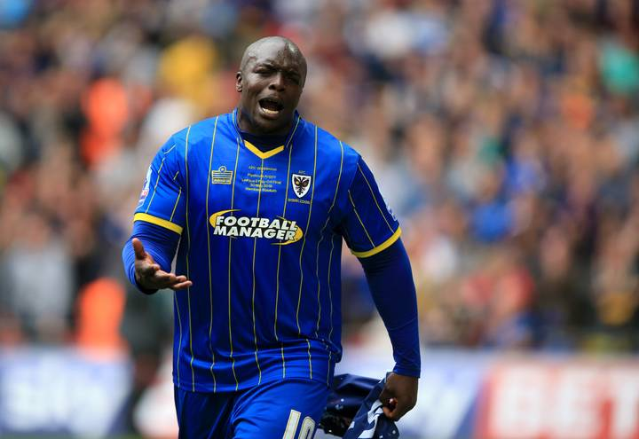
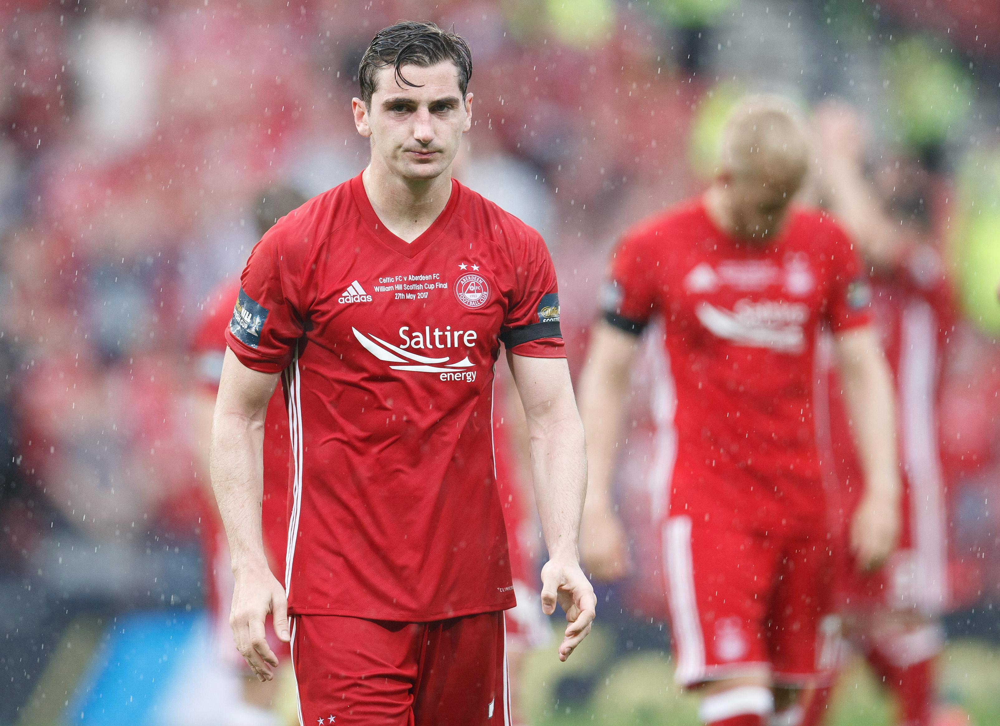
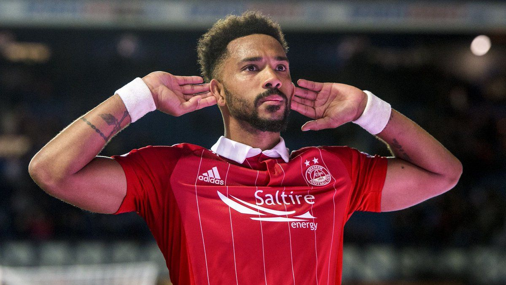
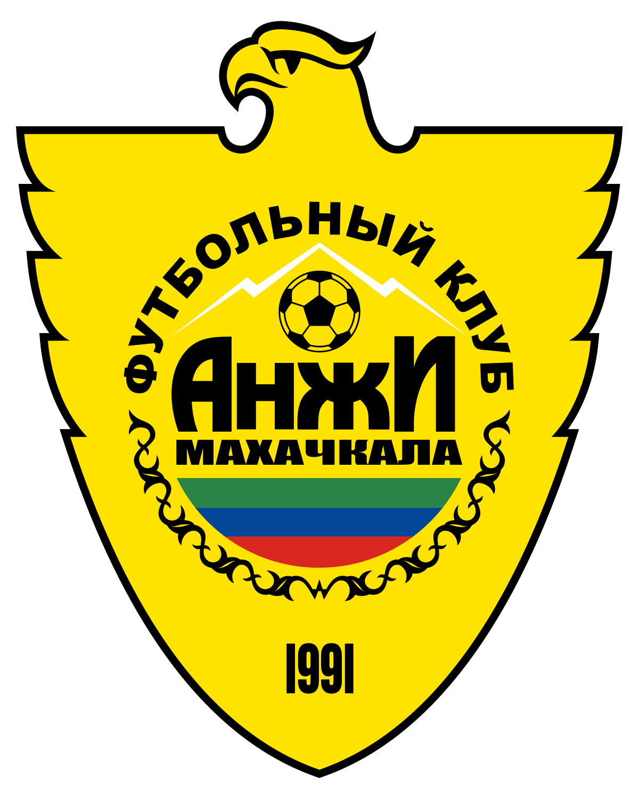
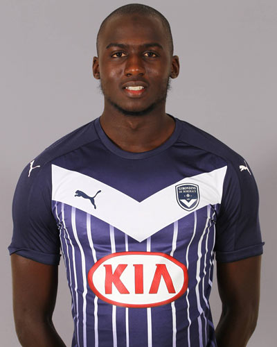
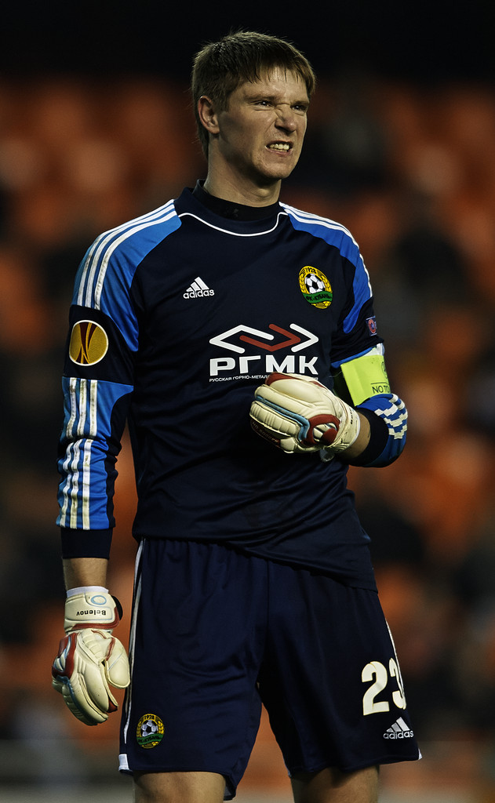

history
history
best thing since sliced bread, Anzhi Makhachkala have been the heart and sole of russia, formed in the ussr Anzhi Makhachkala have turned communism into a worldwide brand and is slowly becoming the most powerful / best football team the world has ever seen, with great players leaving great legacies
best thing since burnt bread, Aberdeen has been on the rise of world football with their rather origional play style. Rumour has it they've only been feeding their players on a strict diet of haggis and gruel, but this is not confermed, you'll have to talk to the ceo - arthur W.
Legends
  Akinfenwa
Mclean
Logan
Akinfenwa, aka the beast from the west lanchashire, known for his strenght and his ability in the air, especially diving headers, anything else and he's useless
Mclean, aka MC clean the face of aberdeen, known for free kicks always being on target no matter the range
Logan, the next big thing in scottish football, but still in training
Legends
 
Yambere
Belonov
Tigiev
Yambere, sometimes confused with pogba because of his immense skill, the heart and sole of Anzhi Makhachkala defence, nobody gets past this guy (except for Akinfenwa in the air)
Belonov, some sick man from EA decided it would be a crazy prank to swap a russian goal keeper that nobody would find and swap their stats with manuel Neuer, result hasn't let a goal in from the dawn of time and trademarks the drop glitch
Tigiev aka Bob Ross, the origional face of Anzhi Makhachkala, the most allround player, can play in any position without fail, and has more ballandors to his name then lionel messi and Christiano Ronaldo put together